001 / DESKTOP EXPERIENCE01 FEATURED BUILD
Weather
Eyes.
A living macOS wallpaper where the sky follows real weather and a pair of expressive eyes follows your cursor. Daily colourway drops. Tiny details everywhere.
Explore project